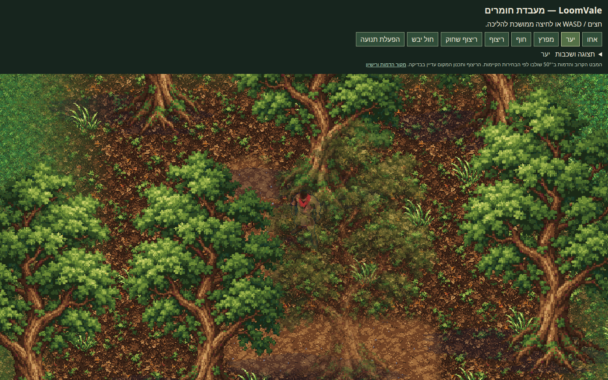
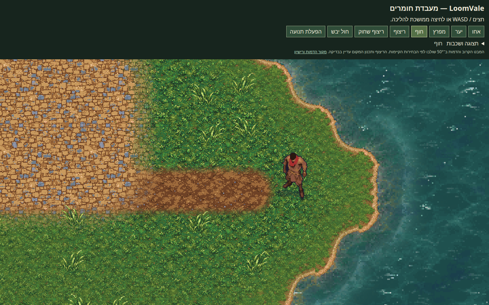
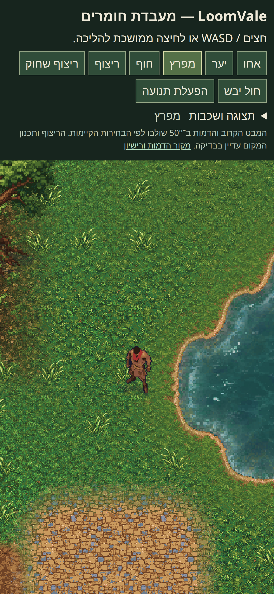

28.10.2026 · צילומים מתוך הדפדפן: המצלמה הקרובה, הדמות שנבחרה, התאורה והצללים בתוך העולם הקיים.
פתיחת העולם להליכה · צילום הסקירה הקודם, לעיון היסטורי
זו מעבדת חומרים מחוברת. הריצוף עדיין ממתין לתכנון המקום ולאישורו; הדוגמה אינה מפת משחק מאושרת.


